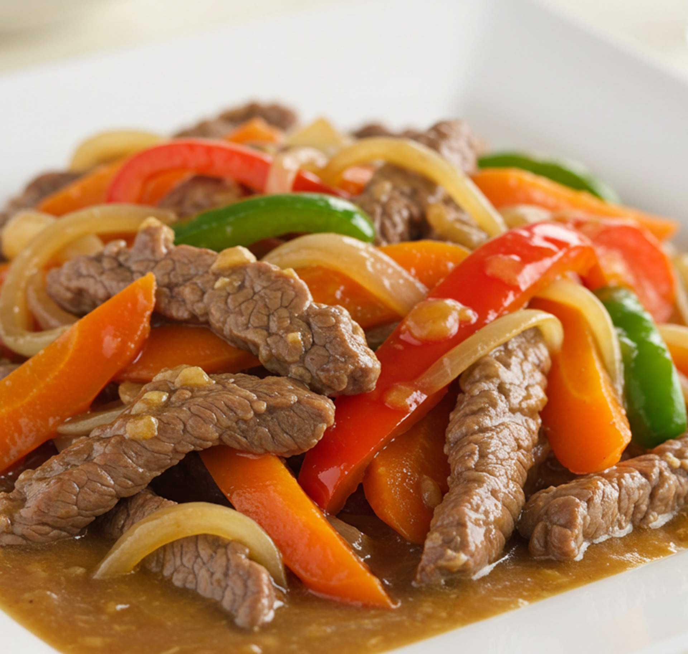
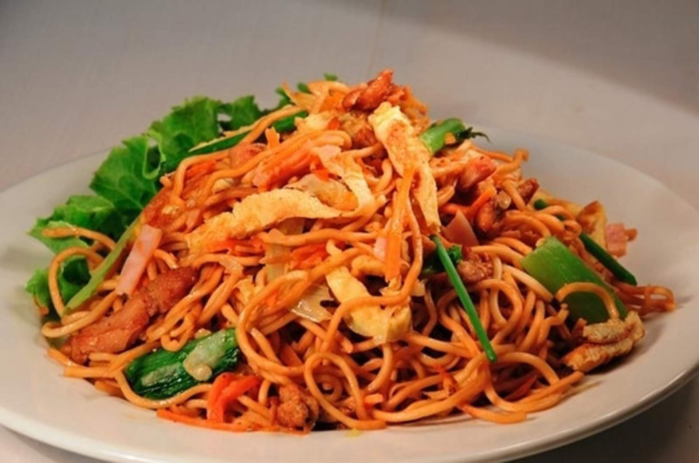
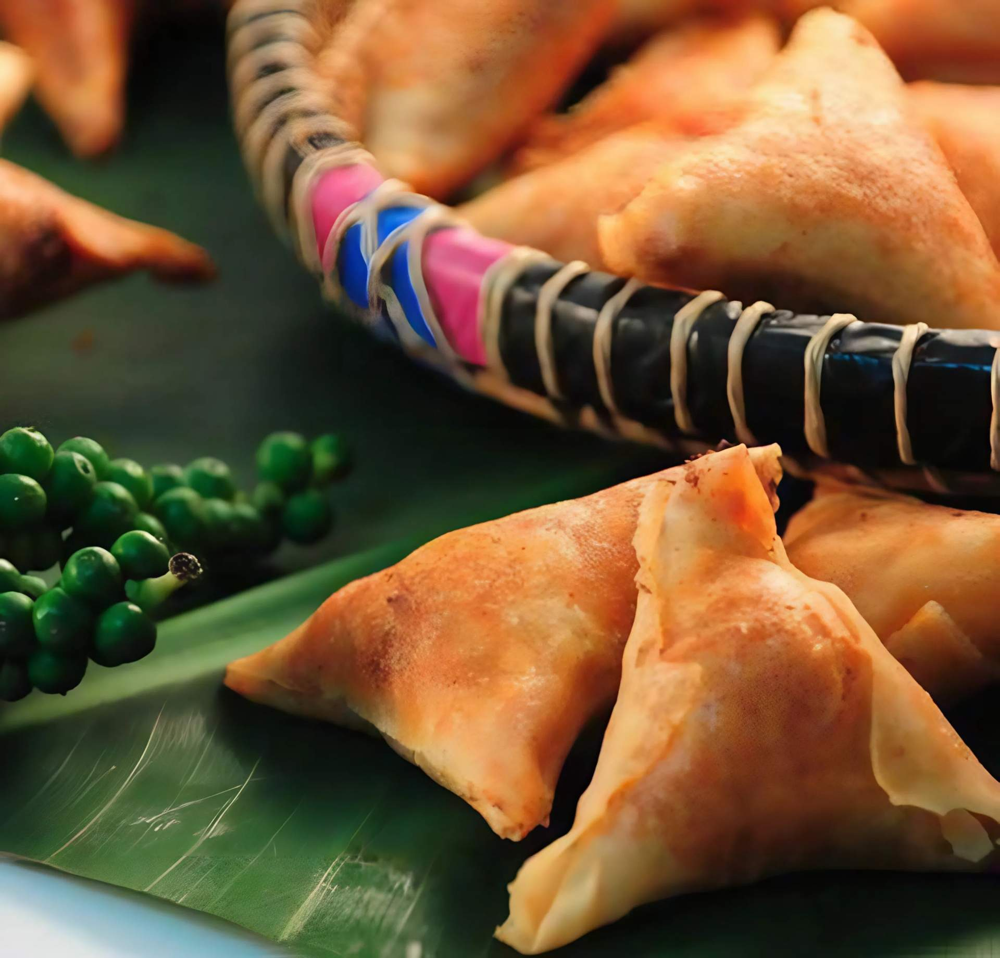
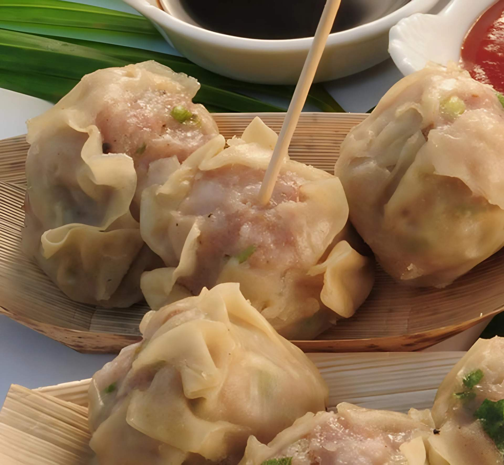
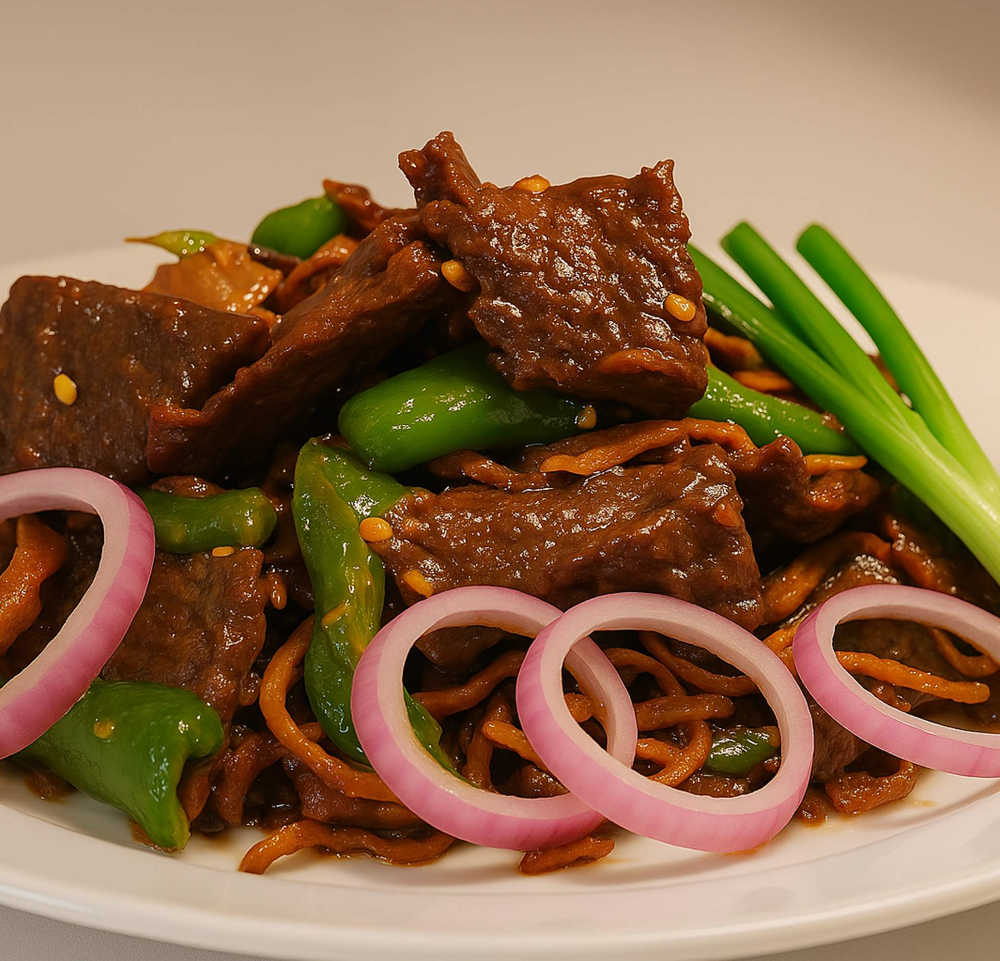
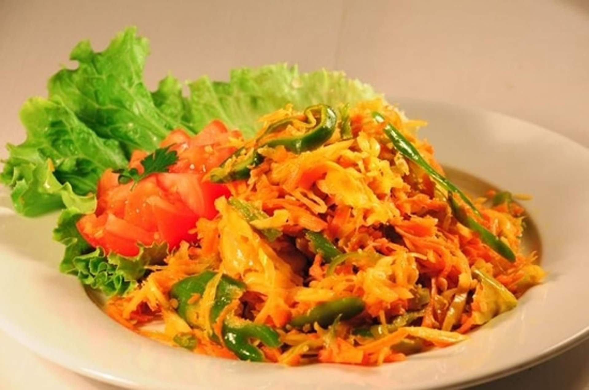

Qualité
Des goûts authentiques et savoureux qui respectent les traditions culinaires réunionnaises. Chaque plat est préparé avec des ingrédients sélectionnés pour leur fraîcheur et leur qualité.

Fabricant de plats préparés à Saint-Pierre, nous produisons et commercialisons plats cuisinés, samoussas, bouchons et sandwichs frais sous la marque Cuisine du Sud — saveurs authentiques de La Réunion, disponibles en GMS et collectivités.
Découvrez de délicieux plats frais ou surgelés, passez votre commande chez Sud Service Traiteur, spécialiste des plats préparés. Depuis 1987, nous produisons et commercialisons plats cuisinés, salades et sandwichs de la marque « Cuisine du Sud ».

Grande variété de menus et produits disponibles dans les grandes et moyennes surfaces, rayons traiteur, snacks, restaurants et collectivités. Nos plats cuisinés conjuguent praticité et saveurs réunionnaises authentiques.

Nos samoussas et bouchons sont préparés selon les recettes traditionnelles de La Réunion. Farces généreuses, pâte croustillante, épices dosées avec soin — des produits qui font l'unanimité dans les rayons traiteur de toute l'île.
Depuis plus de 35 ans, Sud Service Traiteur s'impose comme le référent des plats préparés à Saint-Pierre grâce à trois valeurs fondamentales.
Des goûts authentiques et savoureux qui respectent les traditions culinaires réunionnaises. Chaque plat est préparé avec des ingrédients sélectionnés pour leur fraîcheur et leur qualité.
Sérieux et facilité d'adaptation à vos besoins spécifiques. Que vous soyez une grande surface, un restaurant ou une collectivité, nous trouvons la solution adaptée.
Respect d'un savoir-faire culinaire traditionnel transmis depuis 1987. Nos recettes puisent dans le riche patrimoine gastronomique de La Réunion pour vous offrir des saveurs uniques.
Grande variété de menus et produits disponibles dans les GMS, rayons traiteur, snacks, restaurants et collectivités. Choisissez parmi nos spécialités et dégustez les saveurs authentiques de La Réunion !

Galerie présentant nos plats cuisinés, samoussas, bouchons et sandwichs frais, illustrant la qualité et la diversité de notre production.

Depuis plus de 35 ans, Sud Service Traiteur met son savoir-faire culinaire au service de plats frais et surgelés, valorisant les saveurs réunionnaises, livrés partout sur l'île selon vos besoins.
Notre équipe passionnée s'applique chaque jour à perpétuer les recettes traditionnelles de La Réunion tout en répondant aux exigences modernes de qualité, d'hygiène et de traçabilité alimentaire.
Année de création
Ans d'expertise
Local, Made in Réunion
Distribution île entière

Sud Service Traiteur produit et commercialise plusieurs marques présentes dans les rayons de toute La Réunion.
Visitez-nous à Saint-Pierre pour découvrir nos produits et bénéficier de conseils personnalisés. Notre équipe est disponible pour répondre à toutes vos questions et vous accompagner dans vos commandes.
Restez informé avec nos actualités et contenus dédiés à nos produits, recettes et services.
Découvrez l'histoire et les secrets de fabrication de nos samoussas artisanaux, préparés chaque jour selon les recettes traditionnelles de La Réunion.
Retrouvez notre nouvelle gamme de plats surgelés dans les rayons de vos supermarchés préférés. Des recettes authentiques, pratiques et savoureuses pour toute la famille.
Depuis 1987, Sud Service Traiteur perpétue le savoir-faire culinaire réunionnais. Retour sur trois décennies d'engagement pour la qualité et l'authenticité.